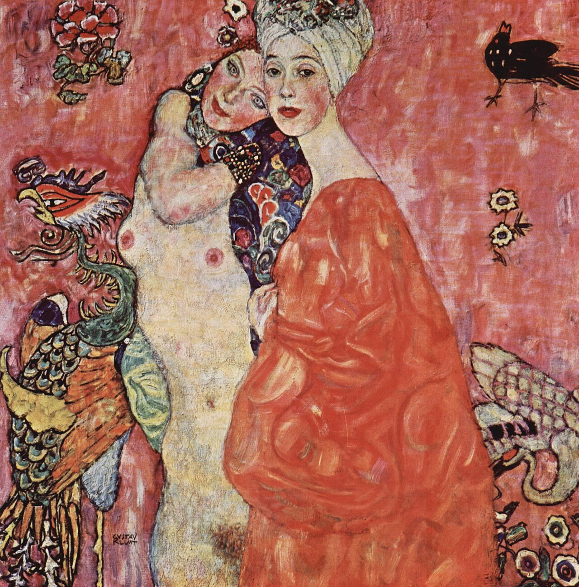

Poems
Three Odes for Franci

I.
Packing and preparing for my upcoming trip, I consider who it is I most want to see when my phone buzzes: it’s Franci. In one week I’ll breathe back pine trees, succumb to the ecosystem of a sculptor: surfaces veneered in soft pale dust, a modernist homage to Pompeii. Franci’s hair is choppy, not-quite-gray. She’s in transit and so am I, unpacking then trying again, tossing in half-folded shirts and laughing because Franci’s finally ditched her greencard husband, the old bum. I only knew him when he moped around the house she owned and bemoaned his bitter place as her housewife. I cry congratulations then remember to wonder what real love might have existed there. One day I’ll be better: I’ll ask her. For now, however, she shrugs him off and replies: “Let’s be honest, I was never the marrying kind.” Hear how she shines? Next week, we’ll imbibe drinks that are glittery and sublime, that fizz stars into the sky, and I’ll stare at her, starry-eyed.
II.
Two howling dachshunds leap and yip over Joni Mitchell’s plaintive warble as we shimmy, suitcase-laden, through Franci’s front door. Franci, through invitation arms, calls her home a tear-down job. This home, loud with every inch of her – a tear-down job. This home, crowded with all her hands could clay – a tear-down job. This home, cacophonous with her love – a tear-down job. Heaven had better have this many places to sit, this many rugs on which to call a small tail-thumping dog into one’s ready lap.
III.
While Sam sleeps the record slips into “Chelsea Hotel #2” and Leonard Cohen’s marble-mouthed croon fills the room – I need you, I don’t need you Franci sings, full-throated and theatrical, and like the record we spin. Fingers locked and swinging, we commit to the bit then careen – I need you, I don’t need you Back at the table, I only hum where the harmonies should go, preferring instead to hear all the ways Franci lets me into her voice – And all of that jivin’ around.
Catherine Kauffmann is a writer and teacher currently residing in Baltimore, Maryland. She performs and publishes music under the moniker Catherine Savage, borrowing her mother’s maiden name for the project. She is a Masters candidate in fiction writing at The Johns Hopkins University.